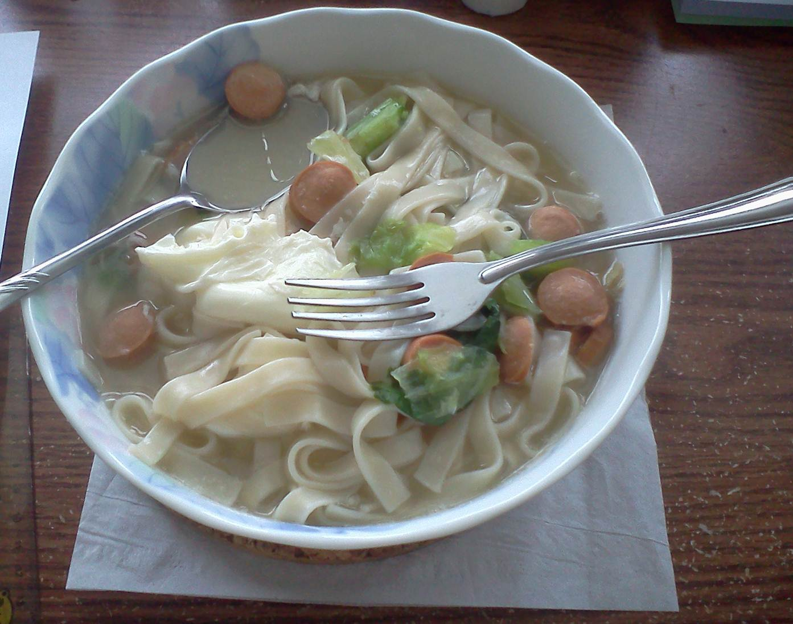

SCP-348, filled with noodle soup.
Item #: SCP-348
Object Class: Safe
Special Containment Procedures: SCP-348 is to be kept in a standard locker at Site-19. Personnel wishing to conduct tests involving SCP-348 are to obtain Level 3 or higher authorization, and present a detailed list of intended test subjects.
Description: SCP-348 is a white ceramic bowl patterned with light blue flowers, measuring approximately 20 cm in diameter and 9 cm high. While no maker’s marks are present, the Chinese characters for “thinking of you” (想着你, “xiǎng zhe nǐ”) are etched into the side of the bowl.
When in the presence of an individual afflicted with a minor ailment or injury (i.e., mild cough, runny nose, scrapes), SCP-348 will fill with soup. While the ingredients present within the soups produced by SCP-348 vary, young subjects (individuals between the ages of 4 and 18) have consistently stated that they enjoyed the meal, sometimes stating that it reminds them of their parents’ cooking. Subjects will finish the soup found in SCP-348 if allowed.
Children who eat from SCP-348 several times often express a feeling of contentment, stating that though they are eating by themselves, they do not feel lonely.
Addendum SCP-348-1: SCP-348 was acquired shortly after rumors of a child living in █████, █████████ apparently possessing remarkable recovery abilities came to the Foundation’s attention. Investigation revealed that the child in question originally discovered SCP-348 in the attic of their house, and had come to rely on it after receiving insufficient attention from their parents. The child's parents, both full-time workers, refused to comment on their relationship with the child.
Resulting testing involving children was carried out under the guise of surveys to gauge the success of new food items offered at public schools.
Addendum SCP-348-2: It has been noted that occasionally, after soup produced by SCP-348 has been consumed, a message will materialize on the inside of the bowl. Words produced on the inside of the bowl appear to be printed on the ceramic consistent with existing markings; the message that appears will be in the language most familiar to the drinker of the soup. After several hours (or when SCP-348 produces another meal), the words disappear.
Testing Log SCP-348-1323-█
Subject: 8-year-old female, afflicted with sore throat
Brief Background: Lives with and is on good terms with both parents
Notes: Subject took approximately 30 minutes to consume soup, remarked later that sore throat seemed to have gone awaySubject: 10 year-old-male, recently injured self while biking (minor bruising)
Brief Background: Lives with both parents, often argues with both
Notes: Message appeared, Don’t forget to brush.Subject: 11-year-old male, afflicted with slight cold
Brief Background: Lives with foster parents
Notes: Message appeared, I’m glad you’re happy.Subject: 9-year-old female, afflicted with slight cold
Brief Background: Lives with both parents, said to be prone to tantrums
Notes: Nothing of note occurred during or immediately after testing, subject stated while she didn’t particularly care for the soup after tasting it, she still wanted to eat it. Follow-up investigations revealed that the subject recovered from the cold faster than was expected.Subject: 6-year-old male, recently injured self while playing with friends (minor scrapes and scratches)
Brief Background: Parents divorced, currently lives with mother
Notes: Message appeared, I’m sorry, son.Subject: 7-year-old female, afflicted with cough
Brief Background: Lives with mother and grandmother, father deceased (traffic accident)
Notes: Message appeared, I love you.
Addendum SCP-348-3: Testing has revealed that in the event that someone older than 18 years of age attempts to consume soup created by SCP-348, the individual will find that they are less inclined to finish the meal. Some such individuals will remark that “something is missing," most will simply state that the soup was nothing out of the ordinary.
Further studies carried out with older subjects indicate that though messages will appear for individuals older than 18, the appearance of the messages is worn and faded. (see testing log)
Testing Log SCP-348-2635-█
Note: It was observed that though over one hundred subjects were tested, only four individuals received messages from SCP-348.
Subject: 30-year-old female, afflicted with headache
Brief Background: On poor terms with both parents. Refused to accept father’s offer for career training, currently lives alone
Notes: Message appeared, Why?Subject: 35-year-old male, afflicted with cough
Brief Background: Parents divorced, visits father and stepmother once a month, does not visit mother on her insistence
Notes: Message appeared, It’ll get better.Subject: 40-year-old female, afflicted with sore throat
Brief Background: Moved away and became estranged from both parents, nevertheless sent money and took care of senior housing for both. Father recently passed away.
Notes: Subject noted the soup tasted initially bitter, but was “fulfilling” in the end. Message appeared, Thank you.Subject: 40-year-old male, afflicted with minor back aches
Brief Background: Murdered father approximately one year ago
Notes: Subject tasted and then refused to consume soup, complaining about the taste. Subject later developed mild stomach pains. After the contents of SCP-348 were disposed of, SCP-348 immediately filled with what appeared to be salt water, which remained for three hours before disappearing.Subject: 45-year-old male, afflicted with aches due to arthritis
Brief Background: Happily married, lives with wife and children. Visits father once a week, with family. Mother deceased.
Notes: Message appeared, I’m proud of you.
Despite the extensive data gathered in testing, it is unknown whether the messages that SCP-348 has manifested originate from the fathers of the subjects, or SCP-348 itself.
Addendum SCP-348-4: SCP-348 was once used in a test involving a 60-year-old man suffering from a terminal illness. The subject, a grandfather with multiple grandchildren, stated that the soup produced by SCP-348 was “the best he’d ever tasted”. Following the test, the subject reported feeling a sense of “satisfaction” and noted that the pain caused by the illness seemed to have faded. The subject passed away peacefully a week later.